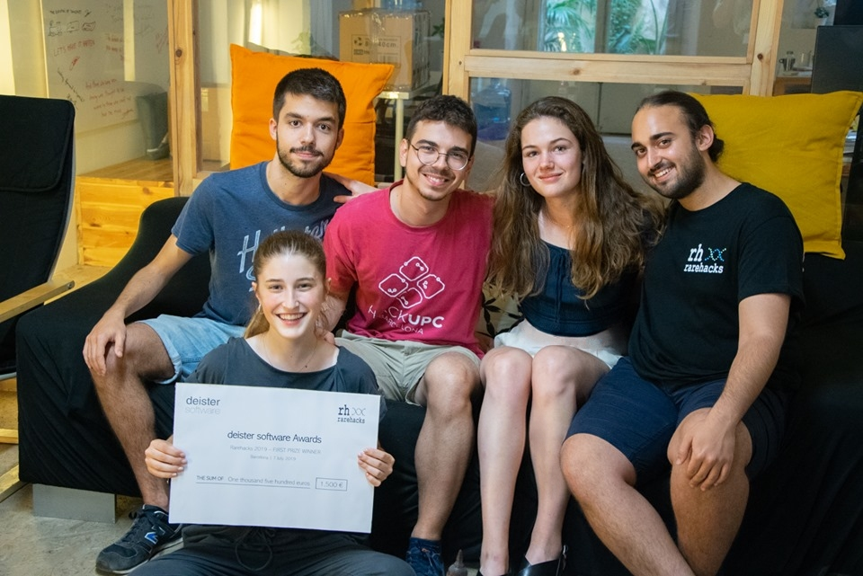

RareHacks 2019
Source code GitHub
The Team
 The team was comprised of multidisplinary profiles including data and computer science, physics and clinal profiles. We were Oriol Aranda (UPC), David Pujol (UPC), Sergi del Río (UB), Lucía Chacón (UB) and myself .
It was a great opportunity to meet people with different backgrounds inside and outside the team. Oriol and David had a computer engineering background and were the code developers. Lucía and myself had a biomedical engineering background that fits perfectly with the clinical profile. That role demanded to organise and annotate the material, evaluating the outputs and advising in the overall design. Finally, Sergi with a physics background and a lot of interest in data science supported the design work.
The Challenge: RareBot
The purpose of this project was building a smart chat bot capable for providing answers to rare diseases patients' relatives. The chat bot aims to parents of children suffering from paediatric melanoma, an ultra-rare condition with an extremely low prevalence that differs significantly from the adult disease.
At the discovery phase, Lucía and I conducted interviews in order to get a better understanding of the real problem. There was a real need to find a solution to the limited access to reliable medical information. Sometimes, families were learning from forums or other non-scientific sources of information. We decided to create a database with reliable and well-organized information. We also consider the necessity to know the nearest specialized hospital, in emergency situations.
Our team decided to build a chatbot for Telegram programming in Python and named it RareBot. The code implemented machine learning tools and multilanguage capability so the user can interact in any language. Other features added to our proposal were the correction of words during the interaction and the inclusion of various questions for the validation of the correct type of melanoma. The last one was done prior displaying the information in response to the questions. Our chatbot also considered the concurrence of multiple users simultaneously. Finally, the RareBot provided to the users the closest certified center according to their geolocation.